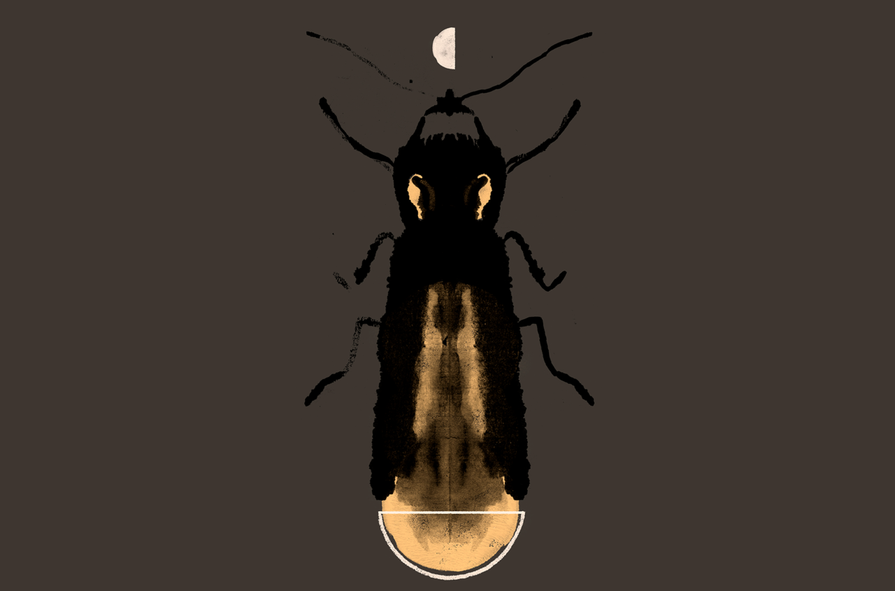

Análisis: Las luciérnagas se apagan
El reportaje de Diana Amador, Las luciérnagas se apagan, publicado por la revista Gatopardo a principios de 2022 –y ahora nominado al Premio Gabo–, plantea como idea central, la extinción local dentro de los bosques de luciérnagas en Tlaxcala debido al cambio climático. Estos insectos con cada vez menos luz son el hilo conductor de una historia que crece de lo particular a lo universal.
Con el título nos podemos dar una idea de lo que tratará el reportaje, responde al qué, nos falta contestar otras preguntas para conocer la historia completa. Además, la imagen que transmite se apagan nos puede remitir a un foco de luz, a una llama que se extingue, al anochecer. La temática se presenta durante todo el texto con palabras u oraciones como: brillo, encendió la luz, chispas de luz, oscuridad para seguir brillando. Es decir, el lector, de principio a fin, tiene presente la luz o la oscuridad; un juego de yuxtaposiciones.
¿Qué más hay sobre el desastre ambiental en Tlaxcala? En primera instancia hay ofertas turísticas; hospedaje, transporte y santurarios de luciérnagas. El navegador suguiere otras busquedas relacionadas a la temporada de luciérnagas, paquetes de estancia, precios e imágenes. Al buscar sobre la extinción de esta especie aparecen notas breves de 2018 a la fecha que cubren el tema. Por ejemplo, hay una nota de la UNAM donde aparece una de las fuentes para el reportaje de Gatopardo; o hay otro de México Desconocido que nos remite al departamento de biología de la Universidad de Tufts donde Sara Lewis –otra de las fuentes citadas en el escrito de Amador– trabaja y se ha especializado en esta especie. Sin embargo, los textos que hay son científicos entonces o son sumamente especialisados o muy breves pero sí marcan puntualmente tres causas de este fenómeno.
Aquí es donde entra Diana Amador quien ha colaborado con Gatopardo a partir de 2022 y quien tiene un interés periodístico por la conservación y el cambio climático. No son los únicos temas que ha cubierto pues también escribió sobre la tesis plagiada de Enrique Peña Nieto para Animal Político. En sus redes sociales, comparte imágenes de animales y pone datos sobre ellos.
¿Qué distingue a su reportaje de otras notas sobre las luciérnagas en Tlaxcala? El gran acierto de la investigación de Amador es la forma de contarlo. En las primera 700 palabras ya sabemos qué está ocurriendo; dónde que, en este caso, se enfoca en Nanacamilpa uno de los sesenta municipios de Tlaxcala; cuándo, por qué –por lo menos algunas de las múltiples razones–; así como el contexto de este lugar con el apoyo de las vivencias de Ricardo González, uno de los propietarios del ejido de San José –sitio para observar a las luciérnagas– y uno de los habitantes más antiguos del lugar.
El reportaje se va desdoblando conforme pasas las páginas, así, encuentras nuevas razones por las cuales las luciérnagas de este lugar se están extinguiendo y, a la vez, hay esperanza entre las palabras y los testimonios. No es un escrito que catastrofice o exagere lo que está ocurriendo, fenómeno que suele suceder con temas de cambio climático o extinción. No obstante, sí nos alarma y nos presenta los matices que puede traer el turismo o el cambio climático, no sólo en los habitantes de un lugar sino en las especies más pequeñas que lo habitan. En ciertos párrafos pone a los humanos como personajes antagónicos del reino animal: El mundo les pertenece: lo han habitado desde hace trescientos millones de años, aunque poco a poco se los hemos arrebatado.
Asimismo, las descripciones de los habitantes de Nanacamilpa hace que el texto te envuelva en las luces dignas de una fantasía. Esto causa que, sin presenciar a las luciérnagas, te maravilles por lo que unos seres tan pequeños pueden imprimir en nosotros.
También el recorrido y explicación sobre las causas de esta extinción local son claras y no se vuelven pesadas de procesar con datos o lenguaje científico. Las que traza la periodista son: aumento en la temperatura, tala de árboles, químicos y pesticidas en siembras cercanas, descortezadores, contaminación lumínica, turismo no regulado por cantidad de gente y la forma de llevarlo a cabo. Igualmente, logra que sus fuentes lleguen al lector. Sea por su historia y vivencias personales con relación a las luciérnagas o por la investigación que han desarollado en torno a ellas. A lo largo del texto, hay 12 fuentes citadas y cada una de ellas presenta un ángulo distinto de la historia, pero todas concuerdan que el paisaje de luces ya no es el mismo que antes.
Algunas de las distintas fuentes de Amador son:
- Ricardo Gonzáles, señor de 81 años, dueño de un ejido donde las luciérnagas son visibles por la noche. En 2021 recibió 92 dólares al terminar la temporada alta y a pesar de que es un ingreso importante para él, extraña los espectáculos de luces que veía en la calle –no era necesario adentrarse al bosque– o jugar a atraparlas. González ha vivido cerca de estos insectos toda su vida y por eso tiene un antes y un después de esta cercana extinción.
- Alejandro Martínez, un guía turístico de Nanacamilpa, quien se ha vuelto experto en identificar los sonidos de las luciérnagas.
- Tania López-Palafox y Carlos Cordero, biólogos de la UNAM que han investigado sobre el tema e hicieron una propuesta para el gobierno de Tlaxcala para regular las visitas turísticas por día; sin embargo, el gobierno rechazó la propuesta pues los ingresos económicos serían menores –sin considerar el hábitat de las luciérnagas–.
- Sara Lewis, bióloga especializada en esta especie luminosa, es utilizada como una fuente de consulta ya que hay citas directas de su libro Silent sparks: the wonderous world of fireflies.
Para el montaje y organización del reportaje, este se divide con subtítulos –cuatro en total– que permiten profundizar más en los temas planteados. Estas divisiones dan una pista de lo que tratan –ejemplo: Consumidas por su propio brillo– mas no son tan directos como el título principal del reportaje. Otro elemento caracterísitico son las ilustraciones de Armando Fonseca que acompañan la portada y entre páginas de la investigación. Estas también cuentan una historia. La imagen que abre la portada del reportaje es una luciérnaga de página completa con media luna arriba de ella, la otra mitad de la luna, se encuentra en el extremo de su cuerpo; es decir, de donde proviene su luz. La ilustración cobra más sentido cuando conocemos, a través del escrito, que la luna incide en el comportamiento y capacidad de reproducción de este insecto. Esto crea que el texto tenga otro ritmo al leerse pues es “interrumpido” por las ilustraciones. El reportaje, originalmente, está impreso en papel, dentro del número 218 de Gatopardo y posteriormente se publicó via web y en las redes sociales de la revista y de la periodista. Dentro de la revista impresa, este reportaje forma parte de una edición dedicada a la crisis ambiental, es una fracción de todas las historias que se reunieron sobre este tema.
Esta es una historia que se forma en Nanacamilpa y que nos cuenta cómo las luciérnagas en los bosques de este lugar están desapareciendo por la crisis climática. Sin árboles las luciérnagas están desprotegidas ante las inclemencias del calor y con los sembradíos tan cerca viven bajo una constante amenaza química. Una cosa afecta a otras. Es una cadena. Y aquí, donde las cosas pequeñas importan, el reportaje cuenta una historia más grande donde todas las especies estamos viviendo, ante nuestros ojos, cambios drásticos en el medio ambiente.
El reportaje termina con una cita de Sara Lewis: Cada vez que una especie desaparece es como apagar una habitación llena de velas una a una. Puede ser que no lo notemos cuando las primeras llamas se apaguen, pero al final, estaremos sentados en la oscuridad.